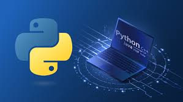

Aprenda a programar em Python 3 do zero até o nível avançado, desenvolvendo projetos práticos que simulam situações reais do mercado de trabalho. O curso combina teoria e prática para garantir que você domine a linguagem mais popular da atualidade.
O que você vai aprender da programação com Python:
- Estruturas de dados, funções e módulos
- Programação orientada a objetos
- Manipulação de arquivos e banco de dados
- Automação de tarefas
- Desenvolvimento de projetos práticos e aplicados
Público-alvo:
- Iniciantes que nunca programaram
- Estudantes de tecnologia que desejam fortalecer suas bases
- Profissionais que querem usar Python em suas carreiras
- Pessoas interessadas em entrar no mercado de programação
Carga horária: 8 horas

üìò Curso: Python 3 do Básico ao Avan√ßado ‚Äì com Projetos Reais
Benefícios:
✔️ Certificado de conclusão
✔️ Conteúdo atualizado e acessível online
✔️ Projetos reais para enriquecer seu portfólio
✔️ Suporte para dúvidas